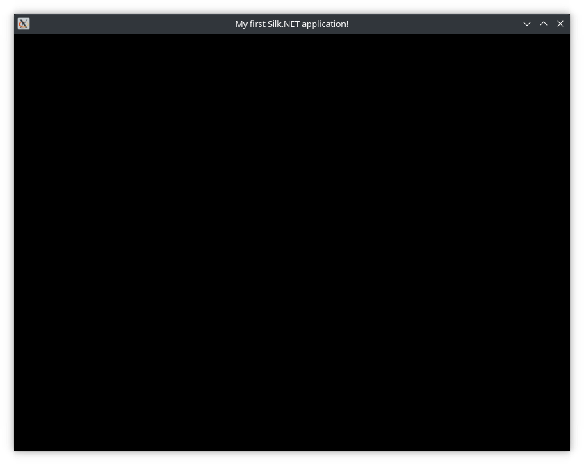
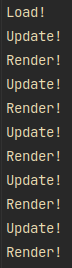

1.1 - Hello Window
Info
You can view the source code for this tutorial here.
Introduction
Welcome to your first Silk.NET tutorial!
The first part of your journey will be learning how to create a window and accept some input.
A basic project
Okay, let's get started!
The first thing we will need is a blank C# project. For this tutorial, we're going to be using .NET 6, however Silk works with any .NET Standard 2.0 platform.
We're going to assume you know how to create projects with your chosen code editor, so create a blank console project. If you don't know how to do this, here are some good guides to get started:
- Creating a basic project using the dotnet CLI
- Using Visual Studio to create a .NET project
- Creating and opening projects with Jetbrains Rider
If you've used, or are using, an older version of .NET, you will be familliar with the standard C# entry point. .NET 6 and up changes this by default, however Silk works best using the old format. If you're using an older version of .NET, you can skip this bit.
Add the following code to your file:
// If you're using an earlier version of .NET which doesn't have file-scoped namespaces (.NET 5 or earlier), you'll need to encase your class inside the namespace.
namespace MySilkProgram;
public class Program
{
public static void Main(string[] args) { }
}
Installing Silk.NET
Before you can get started using Silk.NET, you'll want to install Silk.NET. For the purposes of this tutorial, we're going to assume you're already familliar with creating a C# project, as well as how to install packages with your chosen editor.
While there are many packages available, we'll only need three for this tutorial.
We won't be using the OpenGL package in this tutorial, however we'll be using it in every other tutorial, so it's a good idea to install it now.
Using the dotnet CLI, installing the packages is simple:
dotnet add package Silk.NET.Windowing
dotnet add package Silk.NET.Input
dotnet add package Silk.NET.OpenGL
Or, if you're using Visual Studio, you can use the NuGet Package Manager by right-clicking on your project in the solution explorer and selecting "Manage NuGet Packages...".
Creating a Window
The first thing we need before we can even think about rendering some graphics is a window to render to.
In other languages & implementations, you will often have to write a ton of boilerplate code to create the window & render loop, and dealing with the OpenGL context. Fortunately for us, Silk.NET features a built-in easy windowing library that does all this for us!
Add the following using directives to the top of your file:
using Silk.NET.Input;
using Silk.NET.Maths;
using Silk.NET.Windowing;
The Window Options
Before we can create a window, we need to tell it how to behave on startup. This is done with the WindowOptions struct.
Now, the window options struct contains a lot of parameters. Fortunately for us, we don't need to set all these, as the window options struct contains a Default property that sets these for us.
In your Main method, add the following:
WindowOptions options = WindowOptions.Default with
{
Size = new Vector2D<int>(800, 600),
Title = "My first Silk.NET application!"
};
What these do should be fairly obvious but we'll go over them anyway:
- Size - The initial size in pixels (aka resolution) of the window.
- Title - The initial title (the text at the top) of the window.
Creating the window
In order for windows to work properly, we need to keep a reference to our window after we've created it. This is in the form of an IWindow.
Add the following to the top of your class:
private static IWindow _window;
Next, we need to create the window itself. This is done with the Window.Create() method. All we need to do is pass in our options and it will create a window for us.
In your Main method, add the following underneath your window options code:
_window = Window.Create(options);
Now, you may think we have got enough code to run a window, but if you run the program you'll see nothing will show up. That's because we're missing one more thing.
The last thing we need to do is to tell the window to run. At the bottom of your Main method, add the following:
_window.Run();
And that's it! Run the program and you should hopefully see a window.

Window Events
The window we've just created has several events we can subscribe to, such as loading and rendering, which are key for your program to work properly.
For this tutorial, we'll be subscribing to three events:
- Load
- Update
- Render
Add the following three methods to your class:
private static void OnLoad() { }
private static void OnUpdate(double dt) { }
private static void OnRender(double dt) { }
These are the methods that will power our main application. For this tutorial, we'll only be using OnLoad, but it's helpful to have all three.
Info
The dt parameter is the delta time, which is the amount of time, in seconds, that has passed since the last frame. Using delta time is key for framerate-independent actions, such as movement.
Next, we need to subscribe to these events. Add the following code to your Main method, just after you call Window.Create():
_window.Load += OnLoad;
_window.Update += OnUpdate;
_window.Render += OnRender;
Launch your program again and you will see that... nothing has changed. Good! That means it's working correctly. Try adding some logs in the load, update, and render methods to see exactly when they are called.
We're now ready to handle some input!
Handling Input
Input is a key part of any program. If the user can't input anything, it's not a very useful program. For this tutorial, we're simply going to close the program when the user presses the escape key.
Creating an input context
An input context is responsible for receiving user input, and handling input events. Creating one is simple, thanks to an extension method that Silk.NET.Input provides to the IWindow.
In your OnLoad method, add the following:
IInputContext input = _window.CreateInput();
This will create our input context. To handle keyboard input, we need to subscribe to the KeyDown event.
First, let's create the method that handles this event:
private static void KeyDown(IKeyboard keyboard, Key key, int keyCode) { }
Now that we've done that, we can subscribe to it in our OnLoad method. Add the following after you create the input context:
for (int i = 0; i < input.Keyboards.Count; i++)
input.Keyboards[i].KeyDown += KeyDown;
Sometimes, an input context supports multiple keyboards connected to the host device. In those cases, we want to handle when the escape key is pressed on any connected keyboard, so we subscribe to the event for every keyboard that is connected.
We've now subcribed to the event, try adding some logs in your KeyDown method and see what results you get.
Exiting the program
The last thing we need to do is handle when the escape key is pressed, and exit the program. You may have noticed that the KeyDown event has three parameters. For most situations, you will usually only need the second parameter, key. This returns the actual key that has been pressed.
Closing the window is very simple. Simply call _window.Close() and it will do what it says on the tin and gracefully close the window, as well as calling the Closing event (which we're not using in this tutorial).
Knowing this, add the following inside your KeyDown method:
if (key == Key.Escape)
_window.Close();
And that's it! You should now be able to press the escape key and the window will close.
Wrapping up
You've just completed your first Silk.NET tutorial! Here's some next steps you can take:
- Move on to the next tutorial, where you'll learn how to create a GL context and display a quad on the screen.
- View the full tutorial source code on the Silk.NET git repository.
- Join the Discord server, where you can ask questions, show your stuff, and chat with everyone there.
Something isn't working? Compare it with the final result!
using Silk.NET.Input;
using Silk.NET.Maths;
using Silk.NET.Windowing;
namespace MySilkProgram;
public class Program
{
private static IWindow _window;
public static void Main(string[] args)
{
WindowOptions options = WindowOptions.Default;
options.Size = new Vector2D<int>(800, 600);
options.Title = "My first Silk.NET program!";
_window = Window.Create(options);
_window.Load += OnLoad;
_window.Update += OnUpdate;
_window.Render += OnRender;
_window.Run();
}
private static void OnLoad()
{
Console.WriteLine("Load!");
IInputContext input = _window.CreateInput();
for (int i = 0; i < input.Keyboards.Count; i++)
input.Keyboards[i].KeyDown += KeyDown;
}
// These two methods are unused for this tutorial, aside from the logging we added earlier.
private static void OnUpdate(double dt)
{
Console.WriteLine("Update!");
}
private static void OnRender(double dt)
{
Console.WriteLine("Render!");
}
private static void KeyDown(IKeyboard keyboard, Key key, int keyCode)
{
if (key == Key.Escape)
_window.Close();
}
}
You can also view this on its own here.
Khronos®, Vulkan® are registered trademarks, and OpenXR™ is a trademark of The Khronos Group Inc. and is registered as a trademark in China, the European Union, Japan and the United Kingdom. OpenCL™, OpenGL®, and the OpenGL ES™ logos are registered trademarks or trademarks used under license by Khronos. Microsoft® and DirectX® are registered trademarks of Microsoft Corporation, used solely for identification. All other product names, trademarks, and/or company names are also used solely for identification and belong to their respective owners. Use of external images, trademarks, and/or resources are not endorsements, and no information in or regarding any of these external resources has been endorsed or approved by Silk.NET or the .NET Foundation.
Powered by Statiq Framework